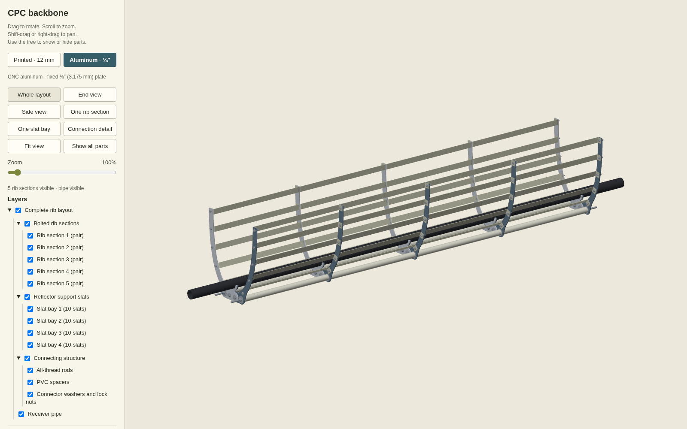
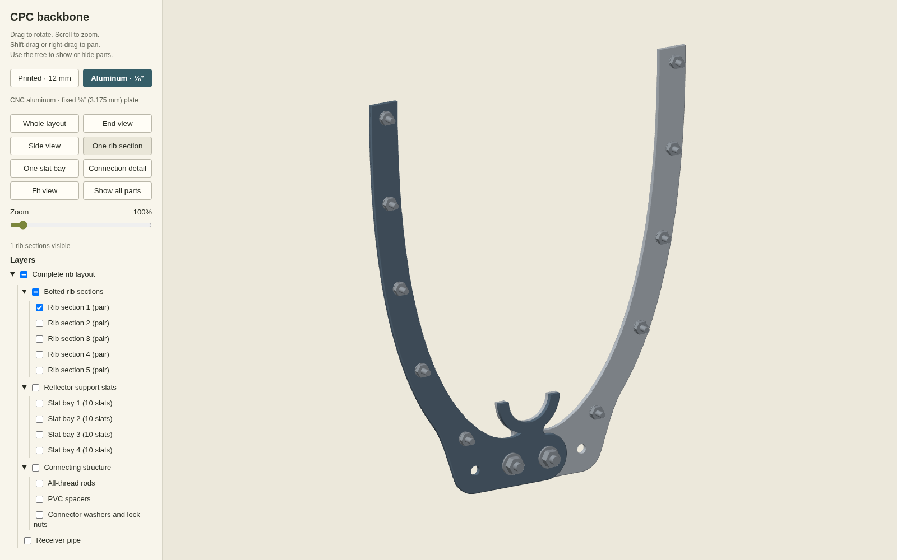
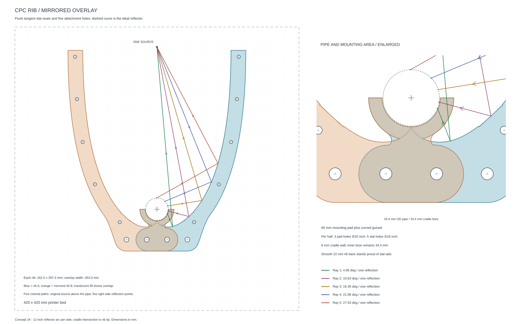

CPC Solar Reflector Backbone
A modular backbone for a compound parabolic concentrator (CPC), with five paired rib stations, one repeatable reflector-support slat, and a choice of 3D-printed prototype ribs or CNC-cut aluminum ribs.
Inspiration and credit
This project was inspired by NightHawkInLight and his video DIY Solar Concentrators, Made Better. See also his companion project post. His explanation of CPCs and string construction was the starting point for exploring a repeatable rib-and-slat structure around a tubular receiver. The CAD, dimensions, hardware choices and calculations presented here document this project's implementation. Credit does not imply his review or endorsement.
Current design
v14 is a CAD design draft. The geometry and exported models have been checked; the assembly has not yet been physically built or tested. The printed option is for fit prototyping. Aluminum is the intended later rib material. Reflector material and attachment, receiver retention and external supports remain to be designed or confirmed.

- Five stations, each made from two identical rib halves placed back-to-back in adjacent axial intervals, for ten halves total.
- Four bays, each carrying five support slats on each side: forty copies of one formed slat design.
- A 72″ receiver pipe, two 61″ all-thread rods and eight PVC spacer tubes.
- A 12″ reflector arc on each side, measured along the curve from the cradle intersection to the rib tip. This is a curved length, not the opening width.
- A nominal transverse acceptance half-angle of ±28.62976°, calculated from the chosen receiver and reflector arc.
Printed and aluminum build options
| Dimension or hardware | Printed prototype | CNC aluminum |
|---|---|---|
| Rib-half thickness | 12 mm | ⅛″ / 3.175 mm |
| Paired-section thickness | 24 mm | 6.35 mm |
| Station pitch | 375 mm | 366.175 mm |
| Rib layout span | 60″ / 1524 mm | 57.915″ / 1471.05 mm |
| Receiver overhang, each end | 6″ / 152.4 mm | 7.042″ / 178.875 mm |
| ¼″-20 rib-pair bolts | 1½″ long | ¾″ long |
| #8-32 slat screws | 1″ long | ⅝″ long |
The slats and PVC spacers keep the same length in both options. Thinner ribs therefore shorten the aluminum assembly and leave more of the centered pipe and rods exposed. Both options use the same transverse rib profile. The current half fits within an approximately 162.5 × 297.4 mm footprint.
Interactive 3D preview
Download the self-contained 3D preview, then open the downloaded HTML file in a WebGL-capable browser. If GitHub displays the file as source, use its download button or clone/download the repository. GitHub's file view does not run the viewer as a webpage.
Choose Printed · 12 mm or Aluminum · ⅛″. Switching materials updates the rib thickness, station locations, fastener lengths, nested bill of materials and model-download links. Rods, spacers and connector hardware have independent visibility controls. Use One rib section, One slat bay or Connection detail to inspect the joints. Download links require the repository folder alongside the HTML file; viewing the assembly itself works from the single HTML file.

Calculations, geometry and ray tracing
Geometry and calculations documents the tubular CPC equations, the 12″ arc constraint, receiver/cradle dimensions, station spacing, spacer lengths, hole patterns and fastener stacks.

Download the ray diagram as SVG · Ray coordinates and checks

The five rays share one nearby source and each make one reflection before reaching the ideal circular receiver. This is a local geometry illustration. It is not parallel sunlight, a whole-aperture acceptance test, or a measured efficiency result. The ray model excludes mechanical shading, finite-length end losses, surface errors and thermal behavior.
Latest sketches and drawings
- 12″ cradle-to-tip arc definition (SVG).
- Current reflector-support drawing 03 (SVG), generated from the v14 slat geometry.
- Earlier reflector-support concept, sketch 02 (SVG). This sketch records the support arrangement before the final 12″ arc revision; use the v14 CAD and current arc drawing for final geometry.
- Aluminum slat-bay rendering and printed slat-bay rendering.


Bill of materials
Quantities below cover one complete five-station CAD backbone. This is the full modeled assembly BOM; unfinished items needed for a working collector are listed separately below. Lengths of bolts and screws are under the head. Confirm actual washer/nut dimensions before buying hardware or cutting spacers.
| Part | Quantity | Printed option | Aluminum option |
|---|---|---|---|
| Identical rib half | 10 | Printed, 12 mm thick | CNC aluminum, ⅛″ thick |
| Receiver pipe | 1 | 72″ long, 33.401 mm OD | Same |
| Identical formed support slat | 40 | ¾″ × 1/16″ strip; 363 mm formed span | Same |
| Rib-pair hex bolt | 10 | ¼″-20 × 1½″ | ¼″-20 × ¾″ |
| Rib-pair hex nut | 10 | ¼″-20 | Same |
| Rib-pair flat washer | 20 | ¼″ bore clearance, ⅝″ OD, modeled 1/16″ thick | Same |
| Slat pan-head screw | 50 | #8-32 × 1″ | #8-32 × ⅝″ |
| Slat hex nut | 50 | #8-32, modeled 0.130″ high | Same |
| Slat flat washer | 100 | #8, ⅜″ OD, modeled 0.032″ thick | Same |
| All-thread rod | 2 | ¼″-20 × 61″ | Same |
| PVC spacer tube | 8 | ½″ nominal Schedule 40; cut length 359.825 mm | Same |
| Fender washer | 20 | ¼″ bore clearance, 1″ OD, modeled 1/16″ thick | Same |
| Nylon-insert end lock nut | 4 | ¼″-20 | Same |
Interior stations share slat through-fasteners between adjacent bays. This accounts for fifty slat screws across eighty slat ends. Slat stock blank length is still to be determined by bend allowance and a formed sample; 363 mm is the formed axial span. The receiver's 26.6 mm modeled ID is illustrative, not a confirmed pipe specification.
The working collector still needs reflector sheet/film and its attachment, receiver retention, external supports/tilt adjustment, and application-specific receiver connections. Their specifications and quantities remain open. Printed material, print settings, aluminum alloy and fabrication tolerances are also to be selected. This BOM does not yet define a complete operational collector.
STL, DXF and CAD downloads
| File | Printed | Aluminum |
|---|---|---|
| Rib-half STL | STL | STL |
| Rib-half nominal cutting profile | DXF | DXF |
| Rib-half editable CAD | STEP | STEP |
| Bolted rib section | STEP | STEP |
| Single master slat | STEP / STL | STEP / STL |
| Ten-slat bay | STEP | STEP |
| Complete backbone | STEP / GLB | STEP / GLB |
The slat STL is a shape reference for the formed metal strip. DXFs are 1:1 millimeters with nine closed contours: one outer profile and eight holes. They are extracted at the STEP rib's mid-thickness to retain the nominal outline beneath cosmetic face edge rounding. DXF curves include splines; confirm CAM support. Tool/kerf compensation and edge finishing are not included.
Source and validation
Reproduction instructions describe the Python generators
and checks included here. The design uses build123d for CAD and a self-contained
WebGL viewer. Current reports accompany the models under models/v14/:
- Per-option CAD/mesh, hardware and independent slat/joint validation reports.
- Export checks.
- DXF round-trip checks.
- Browser checks.
These checks establish modeled dimensions, geometry and viewer behavior. Physical fit, forming accuracy, thermal behavior and structural performance remain untested. Further work includes one formed slat, one assembled rib pair, and a short connected backbone sample before a full collector build.